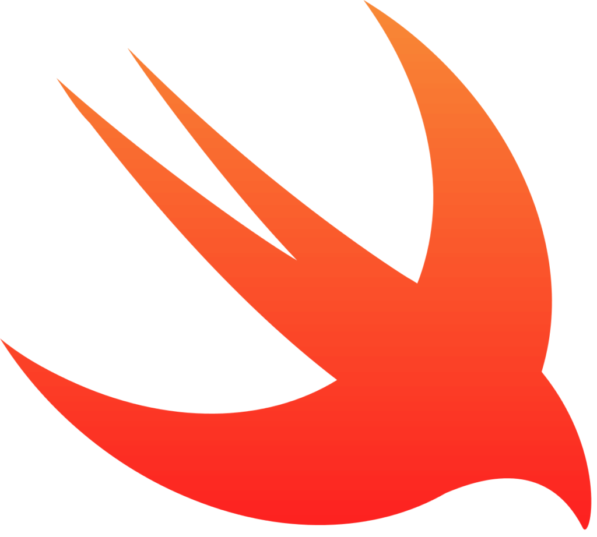

Go
Combina la eficiencia y rendimiento de lenguajes como C con la simplicidad y productividad de lenguajes modernos
La posición en el ranking de stack overflow es 11

JAVA
Java es un lenguaje de programación ampliamente utilizado para codificar aplicaciones web.
La posición en el ranking de stack overflow es 8
C++
La intención de su creación fue extender al lenguaje de programacion C y añadir mecanismos que permiten la manipulación de objetos.
La posición en el ranking de stack overflow es 10

JAVASCRIPT
JavaScript es una de las tecnologias fundamentales de la WWW, juntos con HTML y CSS
La posición en el ranking de stack overflow es 1

Swift
Es un lenguaje multiparadigma (orientado a objetos, funcional, genérico) creado para desarrollar software en plataformas Apple: iOS, macOS, tvOS, watchOS, e incluso visionOS
La posición en el ranking de stack overflow es 16
TYPESCRIPT
TypeScript es un lenguaje de programación de código abierto, lanzado en 2012 por Microsoft. Está diseñado para desarrollar aplicaciones en el lado cliente y del servidor.
La posición en el ranking de stack overflow es 6